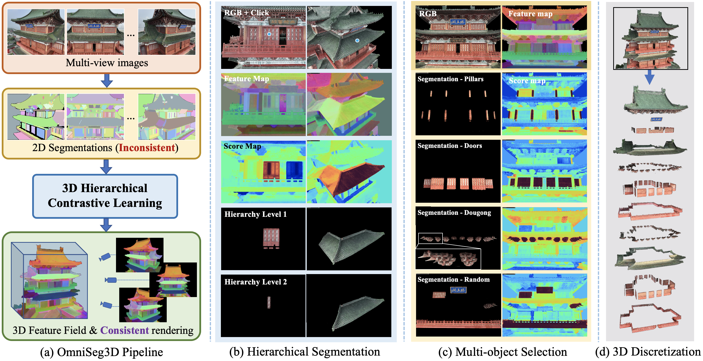
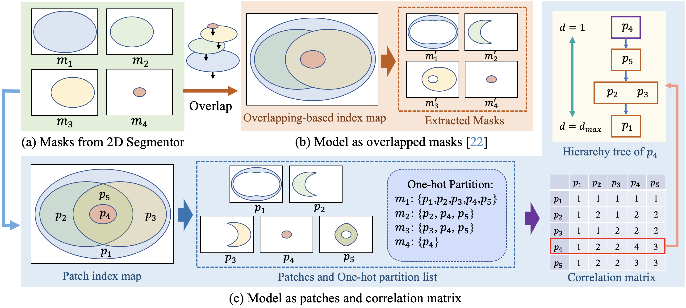
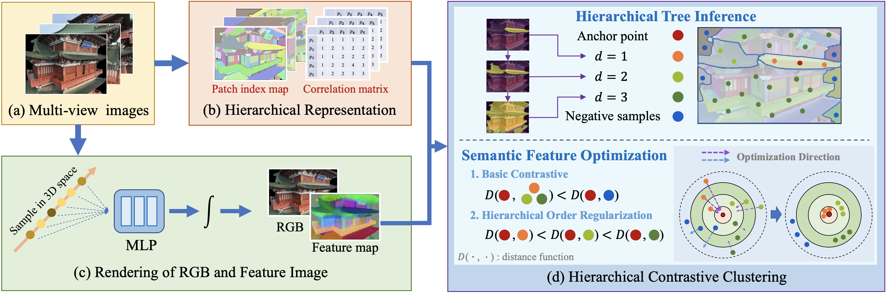

Towards holistic understanding of 3D scenes, a general 3D segmentation method is needed that can segment diverse objects without restrictions on object quantity or categories, while also reflecting the inherent hierarchical structure. To achieve this, we propose OmniSeg3D, an omniversal segmentation method aims for segmenting anything in 3D all at once. The key insight is to lift multi-view inconsistent 2D segmentations into a consistent 3D feature field through a hierarchical contrastive learning framework, which is accomplished by two steps. Firstly, we design a novel hierarchical representation based on category-agnostic 2D segmentations to model the multi-level relationship among pixels. Secondly, image features rendered from the 3D feature field are clustered at different levels, which can be further drawn closer or pushed apart according to the hierarchical relationship between different levels. In tackling the challenges posed by inconsistent 2D segmentations, this framework yields a global consistent 3D feature field, which further enables hierarchical segmentation, multi-object selection, and global discretization. Extensive experiments demonstrate the effectiveness of our method on high-quality 3D segmentation and accurate hierarchical structure understanding. A graphical user interface further facilitates flexible interaction for omniversal 3D segmentation.
Standard volume based rendering methods like NeRF can model complex scenes but suffer from heavy sampling and ambiguous geometry. Primitive based rendering methods like NeurMips enjoys fast rendering but have difficulty representing complex geometric. We propose a novel hybrid representation to take advantage of both kinds of methods. Specifically, we represent the scene with a semantic volume, which consists three kinds of voxels with different sampling strategy. D-voxels we simply use dense sampling like nerf, while for P-voxels we apply sparse primitive aware sampling strategy. Besides, we simply skip sampling within E-voxels.
we show the optimization framework for incremental radiance reconstruction. Given each RGBD image as input, we first detect primitives such as planes. Then we merge the detected new primitives into a global primitive list. Next, we back project the semantic frame into a 3D semantic volume to update the global semantic state. After that, primitive aware hybrid rendering is applied to render RGB values, depth values as well as semantic values which are supervised by the input frames.

We show that our method is capable of real-time rendering and interactions.
In this paper, we propose OmniSeg3D, an omniversal segmentation method that facilitates holistic understanding of 3D scenes. Leveraging a hierarchical representation and a hierarchical contrastive learning framework, OmniSeg3D effectively transforms inconsistent 2D segmentations into a globally consistent 3D feature field while retaining hierarchical information, which enables correct hierarchical 3D sensing and high-quality object segmentation performance. Besides, variant interactive functionalities including hierarchical inference, multi-object selection, and global discretization are realized, which may further enable downstream applications in the field of 3D data annotation, robotics and virtual reality.